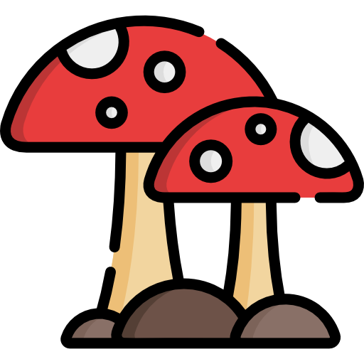

Llegas a lo más recondito de mi mente. La embelesas mediante la lectura que narra tu cuerpo al sentirte
Eres un museo de arte, un compendio de recuerdos fascinantes, un refugio de emociones duraderas
Si fueras un río,
yo sería una canoa tallada en madera, con magia despertada al recorrer tus ondulaciones
de agua resplandeciente.
Tu corriente arrastraría mi cuerpo empapado
en tu esencia hacia un manantial revitalizante: paraíso indómito al que pertenezco.
Me guiarías por cauces diversos y contemplativos,
mientras abres paso a las ofrendas que guardo en mi interior.
Y llegará el momento de lanzarlas hacia tu desembocadura:
Destino que solo tú me puedes mostrar desde tu caudal sereno.
Los peces de tu amor rozan mi piel. Saltan en mi vientre. Siempre habrá espacio para ellos.
Bosque magno emergente de tus profundidades,
rodeando de paz nuestro viaje lleno de gozos y emociones.
El trayecto inequívoco que nos une por siempre.
Texto del botón 4 (personaliza aquí)
Texto del botón 5 (personaliza aquí)
Texto del botón 6 (personaliza aquí)
Texto del botón 7 (personaliza aquí)
Texto del botón 8 (personaliza aquí)
Feliz 2º Aniversario  Mi alma gemela
Gracias por estos dos años maravillosos juntos Te amo demasiado

 Lista de deseos
Lista de deseos